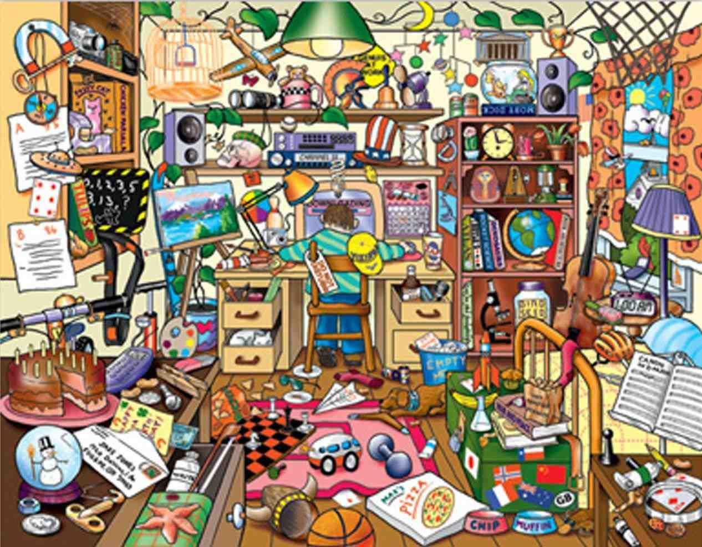

Clean Code/ Refactoring
Remember the times that one of your parents order you to clean up your room? And probably you think at those moments: Stop nagging, let me just continue playing. Until at a certain moment when you want to play with your toy dinosaur and you cannot find it anywhere.
Than you realize that perhaps your parents had a valid point when they asked you to clean up your mess. When a nicely cleaned up room you would have found your dinosaur in a second. That is what is meant with clean code. If you organize your code in a nice manner it is easier to find certain pieces of code back. Especially if you want other people to have a look at your code as well. Imagine what would happen if you ask someone else to look in your mess to your toy dinosaur!
Refactoring
Refactoring means that you try to keep the lines of code as short and simple as possible. This way your code is easier to read, not only for yourself but for others also.Before:

After: